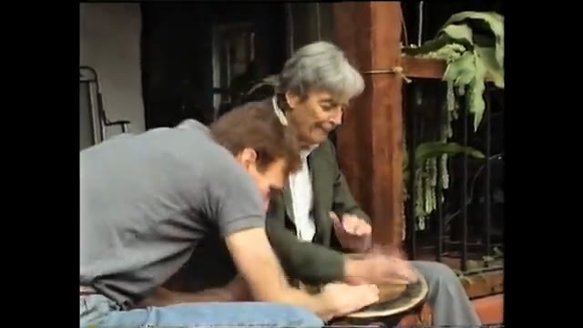
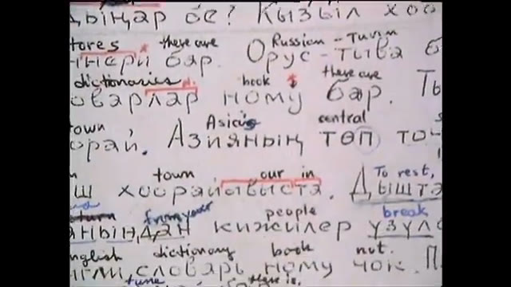
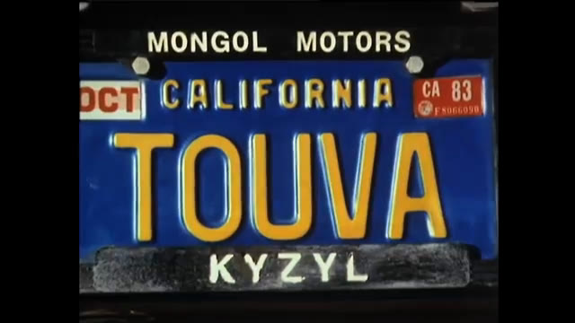
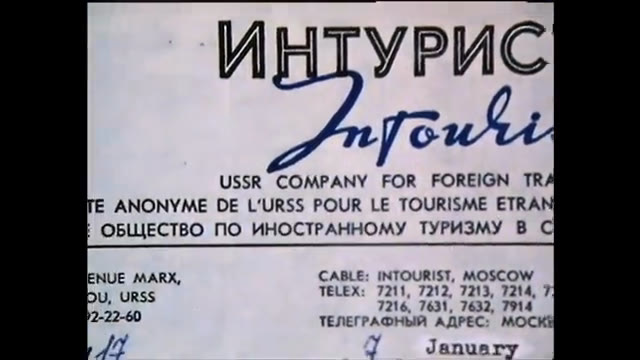
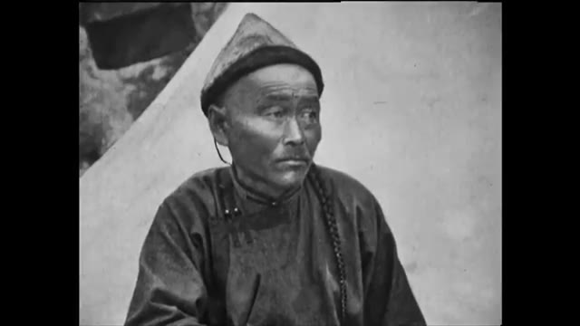
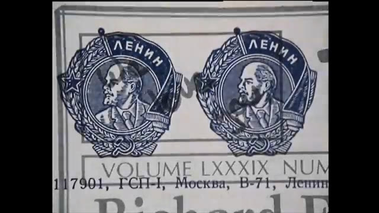
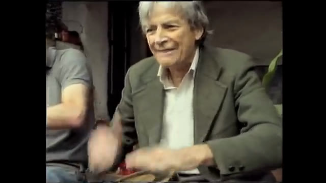

Ten years of letters
Intourist said Tuva was beyond its travel routes. So they taught themselves Tuvan from a phrasebook, built a letter out of its printed phrases, and posted it, as Feynman put it, into the vacuum. Years later an envelope came back from Kyzyl, in Tuvan, from a man called Ondar Daryma.
Greetings from Tuva. Kyzyl is a nice city. You will find we have a monument to the centre of Asia.
After that the country came to them in pieces: a record of throat singing played on Los Angeles radio, a licence plate that read TOUVA, a cancelled conference in Mongolia, a letter home from the Challenger inquiry signed “Tuva or Bust! Love, Richard.” The door that finally opened was an exhibition of nomadic art that Leighton talked into coming to Los Angeles, with no finder's fee. The fee was Tuva.








The Quest for Tannu Tuva, BBC Horizon, 4 July 1988, five months after his death. Directed by Christopher Sykes, from his own channel.